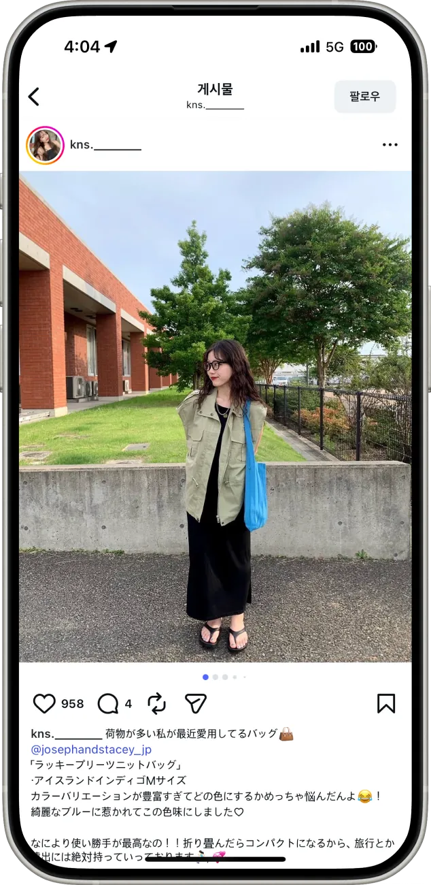
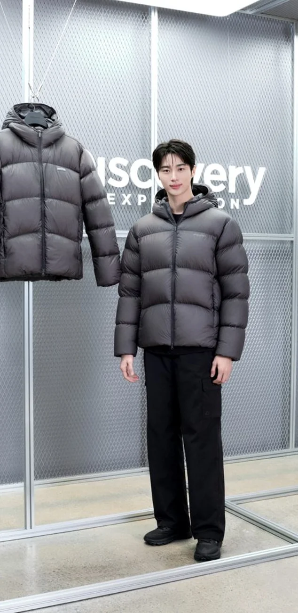

Breadrop · Overview
버려지는 빵을 살려내는
우리 동네 빵집 마감할인 플랫폼

MVP 5차례
버려지는 빵을 살려내는 우리 동네 빵집 마감할인 플랫폼을 5차례 MVP로 고도화
7곳파트너사 베이커리
327건누적 판매건 수
961,380원누적 파트너사 추가 매출
- 1B2B 마케팅 & 파트너십
- 2데이터 분석
- 3콘텐츠 마케팅 & 캠페인 운영
04
증상을 없애는 건 쉽습니다. 그 밑의 원인을 없애야 문제가 다시 생기지 않고, 성과도 오래갑니다.
증상을 없애는 건 쉽습니다.
그 밑의 원인을 없애야 문제가 다시 생기지 않고, 성과도 오래갑니다.
버려지는 빵을 살려내는 우리 동네 빵집 마감할인 플랫폼을 5차례 MVP로 고도화
현장 기반 페인포인트 분석과 차별화된 가치 제안으로 7개 베이커리 파트너사 입점을 설득한 B2B 세일즈


경쟁 플랫폼이 이미 존재하는 시장에서, 차별화 없이는 베이커리 입점 설득이 불가능
타겟 맞춤형 오프라인 행사를 통해 고객 접점을 확보하고, 실구매 전환으로 연결한 마케팅 캠페인


SNS 팔로워 증가와 구매 전환이 연결되지 않아, 실구매 타겟 접점 확보 필요성 확인
픽업 시간대 변경이라는 제약을 새로운 가치로 재포지셔닝하여, 고객 이탈 위기를 매출 증가로 전환한 캠페인


픽업 시간대 변경(저녁 픽업 → 아침 픽업)으로 기존 고객 이탈 리스크 발생
중국 편집샵이 이커머스 시대에도 살아남는 이유를 이해하고, 손익 언어로 설득해 대량 구매를 이끌어낸 해외 B2B 세일즈


타오바오 중심 이커머스가 장악한 중국 시장에서, 도매 거래처가 될 편집샵을 확보
시장별 소비 맥락과 브랜드 포지셔닝을 반영한 인플루언서 마케팅으로 고객층 확대와 구매 전환율 개선


한국 기존 3-50대 중심 고객층에서 1-20대 젊은 층으로 확장
일본 일본 내 조셉앤스테이시 브랜드 인지도 상승
SNS Story 기능 운영과 CTA 최적화를 통해, 노출 채널을 앱 유입 전환 채널로 전환한 데이터 기반 실험


SNS 노출 지표는 높았지만, 실제 앱 유입으로 이어지지 않는 노출-전환 단절 발생
2만 명 규모 마라톤 스폰서십을 팀원들과 기획하며, 행사의 모든 요소를 참가자의 라이프스타일에 맞춰 설계


스폰서 부스는 흔히 “브랜드가 끼어드는 자리”가 되어, 러너의 하루와 따로 놀기 쉬움
AIRWELL 다운을 직접 입어 보는 도심 속 베이스캠프를 성수에서 2일간 운영, 앰배서더 변우석과 미디어·인플루언서를 초청한 브랜드 체험 행사


화보로만 보던 AIRWELL 다운을 직접 체감하게 해, 올겨울 대표 패딩으로 포지셔닝
끝까지 봐주셔서 감사합니다.
연락처는 지원서를 참고해 주세요.